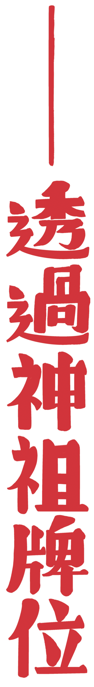

在作節・做祭之時，我們總會遇到幾個很關鍵的問題：什麼東西選擇了保存？什麼東西選擇融合？什麼東西又選擇去湮滅？我們並不想要復刻傳統，因為那對人們來說可能早已沒有了意義，同時我們也不想完全丟掉過去某些重要的精神，這也是為何我們要過節，卻又重新去討論節的意義。
舉一個清明節的例子好了，在當代我們難以過一個「昔日的清明」，掃墓、祭祖、心懷敬虔，因為我們已經對自身的祖先缺乏敬意的感情。相信許多人的祖先牌位都只剩下老一輩會主動祭拜、定期清掃，有些家庭的牌位被放在角落生灰，甚至已經沒有了牌位的存在。於是上山掃墓時你會懷疑是否必要，跪拜時你會懷疑祖先的重要。這些種種的懷疑便是個強而有力的理由，說明了我們為何要過一個「不同的」清明節。
我們想問的是「什麼樣共有的對象可以帶來新的虔誠？」敬意，是我們當代人缺失的語言與情緒，但我們從老一輩的人身上看見它，無論是在公共的廟宇不停地跪拜也好，在自家廳堂對著神龕喃喃說話也好，敬意始終近在咫尺卻與我們毫無相干。
敬意，是否可以有另一種與我們連結的可能，不一定全然朝向神明，比如說對「歷史」的崇敬。試想一下我們的日常，會發現歷史早已融入語言，我們在處事時，不會隨便迸出一個宗教的諍言，但常有歷史的教訓，比方「成語」，就是一種由歷史故事累積而成的格言庫，像廉頗「負荊請罪」或范蠡告誡的「兔死狗烹」。

當牌位從家族中逐漸式微，那麼是否有一個「百姓的牌位」是朝向相同文化的「我們」，讓「我們」可以將自身置放在歷史的洪流中感受敬虔？想著這些問題，於是把「我們的」牌位放入簡易搭建的「龕」裡，插上兩根竹竿，扛上肩，走上了街。
主動地創造牌位的新意義自然是具有挑戰性，甚至可能是激進的，因為這並非不痛不癢的文化創造，而是直擊了既有的傳統、上一代的信仰。
但不得不說，再怎麼對清明節的精神感到疏離，那終究是「我們」的文化，是逃避不了的。為此，我們都應該有一份表達意見的權利。所以當把牌位扛入海裡時，望著最綿延不絕的海平線，也望著數不清的矛盾，是自己的血緣、朋友的家族、土地的衇絡、國族的歷史……心情自然是複雜的，但卻是懇切的。希望能藉由這個形式，使清明的精神能夠持續。
若隨著時代變遷，對於牌位被動地不聞不問，就這樣丟掉牌位也丟掉牌位的精神價值，那麼這才是真正的激進。
「作節・做祭」，從來都不是全然承襲舊的，也從來都不是全然創造新的，裡面有太多的問題得去細細辯證，也許這一年沒有時間、條件去得出一個結論，但如果什麼都不做，什麼都覺得無關緊要，那麼某些重要的東西便會真正地死去，未來也不會開始，只有以一年又一年的行動去回應問題，才有可能去形成文化吧，我們是這麼希望的。